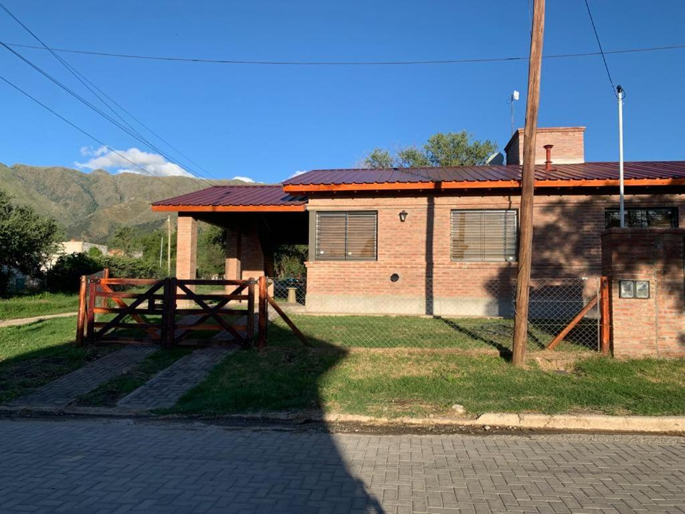
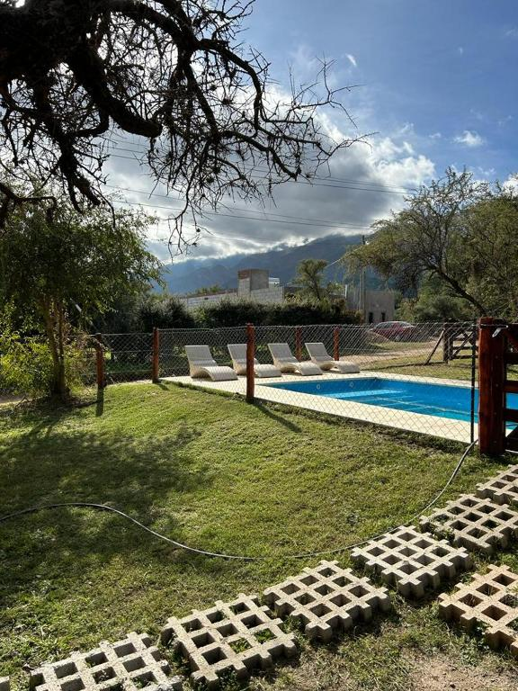

Bienvenidos a "Cielo Serrano"




Ubicado al pie de las majestuosas sierras de los Comechingones,
el Complejo Turístico “Cielo Serrano” ofrece una experiencia única de descanso
y conexión con la naturaleza en Merlo, San Luis. Rodeado de paisajes imponentes,
arroyos cristalinos y un clima privilegiado reconocido como uno de los más benévolos del mundo,
el complejo combina confort y serenidad. Sus cabañas totalmente equipadas, piscina panorámica y senderos ecológicos invitan a los visitantes a disfrutar del aire puro serrano,
el silencio y las vistas inolvidables del atardecer puntano.
Nuestra Ubicacion...